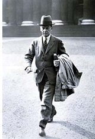

| |
Most of the excavations
in the 20th century had a more serious archaeological purpose than some
of their 19th-century precursors. The first was at Carchemish, situated
on the present border between Turkey and Syria. Excavations sponsored
by the Trustees of the British Museum were undertaken in 1911-14 and
in 1920, directed first by D.G. Hogarth (1862-1927) and then by Leonard
Woolley (1880-1960), assisted for part of the time by T.E. Lawrence,
or Lawrence of Arabia (1888-1935), as he is better known.
The Mesopotamian
collections were greatly augmented by excavations in southern Iraq after
the end of the First World War. From the excavations at Tell al-Ubaid
in 1919 and 1923-4, directed first by H.R. Hall (1873-1930) and then
by Leonard Woolley, came the bronze furnishings of a Sumerian temple,
including life-sized lions
and a panel
in high relief featuring the lion-headed eagle Imdugud. The work
at Ubaid led on to an expedition to Ur directed by Woolley. In the course
of twelve seasons at Ur (1922-34), Woolley made many outstanding discoveries,
particularly in the 'Royal Cemetery' of the 3rd millennium BC. Those
now in the British Museum include some of the highlights of the Ancient
Near East collection, such as the Standard
of Ur, the 'Ram
in a Thicket', the Royal
Game of Ur, musical instruments that include two bull-headed lyres,
and some spectacular gold jewellery.
1
- 2 - 3 - 4
- 5
3 of 5
|
|

Sir
Leonard Woolley outside the British Museum
|
|
|
|